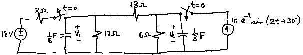
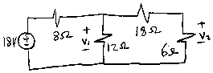
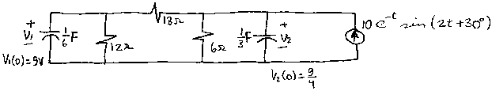

F01 TR analysis: Transitory problem - (Impala)
Question. Given the following circuit, find the complete expressions for v1(t) and v2(t) voltages, for t>0.

Solution:
This is the kind of problems you'd love to solve by hand (as long as you
have in that hand a TI-89 with Symbulator's (Impala), hehehe! ;o)
As you can see, this problem has two intervals. The first one, a direct current interval, in which we must calculate the initial conditions for the next interval. The second one, a transitory analysis interval, which - due to the complexity of the current source - will activate the (Impala). ;o)
First the easy interval.

sq\dc("e18,3,0,18; r8,3,1,8; r12,1,0,12; r18,1,2,18; r6,2,0,6")
v1
v2
With these steps you get the initial conditions: v1(0)=9 and v2(0)=9/4.
Now, the transitory interval. If you try to solve this circuit in a TI-89 as transitory, the calculator won't be able to solve it fast enough for you to finish your test on time. Therefore, instead of using TR analysis, we will work with FD analysis, and later the FD_to_TR tool. Look:

sq\fd("cx,1,0,1/6,9; r12,1,0,12,0; r18,1,2,18,0; r6,2,0,6,0; cy,2,0,1/3,9/4; js,0,2,10*exp(-t)*sin(2*t+Pi/6),0")
When you press Enter, the calculator let's you know it is using (Impala), and tells you when the (Impala) runs, flies and lands. After the frequency domain FD analysis is done, take the specific answers you need to time domain TR, using the FD_to_TR tool, which you can find pressing F5 in the custom menu, or typing it. Since the expressions are huge, it takes a while to the tool, which uses the excellent program DiffEq, to transform them.
sq\fd_to_tr(v1)
sq\fd_to_tr(v2)
Answers:
For v1(t) I found this answer:
(5*sqrt(3)/17-20/17)*exp(-t)*cos(2*t) +(-20*sqrt(3)/17-5/17)*exp(-t)*sin(2*t) +(80*sqrt(3)/17+193/34)*exp(-t/2) +(9/2-5*sqrt(3))*exp(-t)
For v2(t) I found this answer:
(-245*sqrt(3/34-20/17)*exp(-t)*cos(2*t) +(245/34-20*sqrt(3)/17)*exp(-t)*sin(2*t) +(80*sqrt(3)/17+193/34)*exp(-t/2) +(5*sqrt(3)/2-9/4)*exp(-t)
If you are interested in obtaining a numerically aproximated answer, use expand(approx( in the answer.
P.S. Try to find this answers using SPICE, hehehe! ;o)